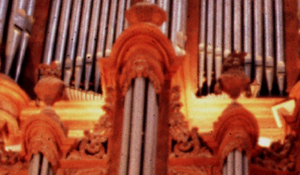

|
Chamade French |
The name Chamade is seldom used by itself, but as a modifier for other stops such as Trompette en Chamade. During the 20th century the phrase en chamade came to mean a stop (invariably a loud chorus reed) whose pipes were mounted horizontally outside the organ case.
The earliest documented example of external horizontal reeds is in the 1588 organ by Gaspar Martin in the Cathedral of Huesca, Spain. By the 18th century, such placement of reeds was commonplace in Spain and Portugal. In addition to chorus reeds like the Trompeta and Clarín, other stops could be found mounted in this manner, including Bajoncillo, Chirimía, and Dulzaina. All of these reeds spoke on low wind pressure, and were not designed to produce an overpowering volume of sound.
The phrase en chamade originated in France, and means �to sound a parley�, referring perhaps to the trumpet of a medieval herald. Its first known use, with respect to an organ stop, was in the 1772 Isnard organ in St. Maximin-en-Var, Provence, France, in which both the Grand Orgue and the Jeux d'Echo (Rèsonance) contained a Dessus de trompette en chamade. These pipes were mounted horizontally outside the case, as shown in this photograph (click on it for a wider view). The use of the phrase was popularized by Cavaillé-Coll, who brought to France from Spain and Portugal the idea of exposed horizontal reeds. Many, perhaps most, of the stops he named en chamade were inside the organ case, though apparantly all of them had resonators which spoke horizontally into the church. Some of these were hooded, with the lower part of the pipes planted vertically on the chests, while others were fully horizontal. In either case the resonators might be visible outside the case, or hidden inside, sometimes even within a swell box.
There are a number of reasons for mounting a reed horizontally, or for �hooding� it by mitering its resonators by 90 degrees. The most important reason, arguably, is tonal: by speaking directly into the church or hall, a noticeable number of high harmonics are transferred to the ears of the listener that would otherwise be lost to reflection or absorption. Another important reason is visual impact, if the stop is mounted externally. Other reasons include tuning stability and protection from gravity-borne dust and debris. It should be noted that all of these advantages except visual impact can be had by placing the reeds inside the case rather than outside, at a considerable savings in cost. Externally mounted reeds are very expensive, because of the required supporting structure, and because the resonators usually employ more expensive materials which are highly finished.
The 20th century saw a profusion of new external horizontal reed stops, too many of them loud, coarse, and inappropriate for either the organ, the room, or both. As a status symbol, few stops equal a shiny Trompette en Chamade whose volume exceeds the rest of the organ all together. Its musical value is another question. This is not to say that en chamade reeds are necessarily bad, but they are appropriate and effective in only a small percentage of instruments and locations.
When used by itself as a stop name, Chamade indicates some sort of chorus reed mounted en chamade. The name is also occasionally used for an entire division.
|
Bombarde en Chamade Clairon en Chamade Trompette en Chamade |
Fan Trumpet Fan Tuba |
Horizontal Trumpet Horizontal Tuba |
Osiris lists about two dozen organs containing stops named simply Chamade, ranging in pitch from 16' to 2'.
Chamade 8', Hauptwerk; Stadtkirche St. Peter und Paul (Herderkirche), Weimar, Germany; Walcker 1908. This is the earliest known example.
|
Original website compiled by Edward L. Stauff. For educational use only. Chamade.html - Last updated 25 October 2003. |
Home Full Index |